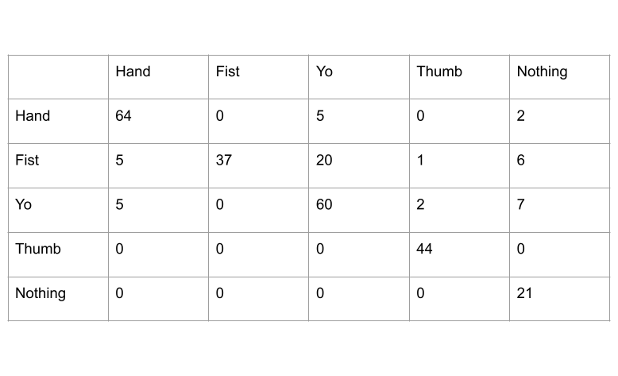

Problem Definition
The problem we are trying to solve is we want to be able to recognize 4 different handshapes from a live video feed. This could be useful because this could be further improved upon later on to recognize even more handshapes. This could even go as far as recognizing other objects outside of hand shapes. Some anticipated difficulties are generalizing the problem to be able to recognize anyones hand and not just the hand that is used to create the templates, as well as making the algorithm work in all different enviornments such as a dark room versus a light room.
Method and Implementation
The implementation for our algorithm included preprocessing of templates and our live video feed and then trying to template match the templates onto the live feed. The preprocessing performed on the templates includes first converting the image to gray-scale. After the template is gray, we then perform a binary thresholding on the image to try and separate out the areas that have skin from the background, and make a mask out of this image. We perform a bit of dilation on the mask in order to get out any random noise in the image. Then we resize the image depending on camera resolution and multiply the mask with the gray image to get an image that is essentially just the gray template with a black background. The final step in our preprossing is finding all of the contours in the image which gives a really clear outline of each of our templates. As for the main frame we are matching the template to we first blur the frame to try and remove any random noise and then turn the frame gray, and then do edge detection on the gray frame. Finally we remove all of the edges that were consistent from the reference frame, the first frame of the live feed, in an attempt to only have new edges in our image, which would be the hand gesture we are trying to detect.
templatePrep- This function performs all of the preproccessing to the templates described above. The function takes in an image and first converts it to gray-scale then from the grayscale we performed binary thresholding in order to create a mask for the template. We then dilate the mask to get rid of any random noise. Then we resize the image depending on camera resolution and multiply the mask with the gray image to get an image that is essentially just the template with a black background. The final step in our preproccessing is finding all of the contours in the image which gives a really clear outline of each of our templates and return this image of the contours.
matchTemplate- This function takes in an image and a template and performs template matching. Then finds the maximum value resulted from the template matching and the location of that value and returns them.
getBestMatch- Takes in the reference frame and then the current frame, turns the current frame gray and performs edge detection on the grayscale image. Then the algorithm finds the difference in edges between the current frame after its been processed and the reference frame in an attempt to only show new edges. From this point getBestMatch then creates a pyramid of the processed current frame, what this means is we resize the image to various different sizes so that if the template doesn't line up with one image it may line up with one of the resized images in the template and return a match. We then create 2 2d matrices, locs and vals, which will later on be used to store the locs and vals from each template matching result we try. Next we loop through each of the templates and each image in the pyramid and try to template match on all of them to see which returns the best result. We then take the maximum result recieved and check to see if it is greater than or equal to our threshold. If it is greater than or equal to the threshold then we get the coordinates for each vertex in our bounding box and we put a bounding box around where we think the gesture is. Finally we add a label depending on which template resulted in the best match.
As for the main part of our algorithm we just start a live feed and store the first image as a reference frame and first blur the reference frame to remove any random noise and then turn the frame gray, and then do edge detection on the gray frame. Then read in the second frame and once again blur the frame to remove any random noise. We call getBestMatch on the first and second frames in order to obtain a threshold that we will use later on when template matching. Finally we now start taking in more frames from the live feed and call getBestMatch on every frame and see which of the templates best matches the current frame, and check if this best match goes over the threshold we previously set. If the result is over the threshold then getBestMatch will build the bounding box and label the box telling what hand gesture the algorithm thinks we are most likely showing.
Experiments
One of our experiments included trying to simply perform the template matching on the binary images rather than the contour images. We found that using this method was effected even more by lighting changes compared to using contour images. Once we switched to using the contour method we began observing much better results. Another test we did before coming to the conclusion contours were the most effective was attempting to use template matching on just gray scale images. We came to discover this worked even less effectively than using the binary images. It seemed we needed to find a relaiable way to separate the handshape from the background in order to effectively use template matching, and this is why we ended up using a reference frame to try and find the difference in contours between the reference frame and frames coming from the camera.
The way we tested our algorithm was by starting the live feed and simply trying all the different handshapes infront of the camera and seeing how the model labled them. After we did this, we were able to take the video created and break it up frame by frame to see where the model was correctly classifying and where the model was incorrectly classifying. We then put all those results into the confusion matrix below.
Results
Video Example
This video shows the algorithm at work on a live video feed, and shows how the model will classify the diferent handshapes as the handshapes change in the video.
Discussion
Discuss your method and results:
- What are the strengths and weaknesses of your method?
- Do your results show that your method is generally successful or are there limitations? Describe what you expected to find in your experiments, and how that differed or was confirmed by your results.
- Potential future work. How could your method be improved? What would you try (if you had more time) to overcome the failures/limitations of your work?
Some strengths are that when the enviornment is setup correctly the algorithm does a very good job classifying different hand gestures. The algorithm also does a really good job creating clear templates that only show the edges of the hand gesture.
A weakness of the algorithm is it not as generalized as we may like. This means if the room is too bright then the model could potentially start misclassifying hand gestures, or if the background of the frame is too noisy then this could result in misclassifications as well.
The algorithm is indeed generally successful at classifying hand gestures, but there are some limitations. The limitations include what was aformentioned, which is that the algorithm sometimes performs poorly in different light enviornments or if the background is too noisy. The algorithm also sometimes performs poorly if there is a face in the frame along with the handshape. Before we began this project I expected that it would be difficult to generalize the model because matching the template can be tricky since it needs to be the same shape, size, and orientation as the handshape in the video. Therefore, I was not surprised when we saw the algorithm getting effected by factors such as light and background noise.
Some advancements that could be made would be trying to further the preprocessing on the frames being brought in from the live video feed to further try and difference the background from the person who is making the handshape. If we could remove as much noise as possible from the background then this will make it much easier to try and match our templates, since all that should be left in the main frame is the handshape. Another advancement could be having more than one template for each handshape to try and account for variations in the hand shape, say if the hand was upside down then there could be a template for that as well. This would just improve our chances or getting a correct match. Finally we could try and improve upon having the algorithm detect hand gestures when a face is in the frame because currently the model will occasionally struggle classifying if there is a face in the frame.
Conclusions
Our conclusion was that the model does an amazing job at classifying handshapes under the right circumstances, but if there is too much variation in the frame, meaning the light is too bright, or the background is really noisy then this could result in the model not performing as well. There are some improvements that could be made in order to further generalize the algorithm to try and make it work effectively in every enviornment.
Credits and Bibliography
Cite any papers or other references you consulted while developing your solution. Citations to papers should include the authors, the year of publication, the title of the work, and the publication information (e.g., book name and publisher; conference proceedings and location; journal name, volume and pages; technical report and institution).
Material on the web should include the url and date of access.
https://docs.opencv.org/master/d4/dc6/tutorial_py_template_matching.html accessed:2/13/21 - 2/17/21
https://docs.opencv.org/master/da/d22/tutorial_py_canny.html accessed:2/13/21 - 2/17/21
https://docs.opencv.org/master/d7/d4d/tutorial_py_thresholding.html accessed:2/13/21 - 2/17/21
Credit any joint work or discussions with your classmates.
Worked with Praneeth Chandra Bogineni, Tabitha Oanda